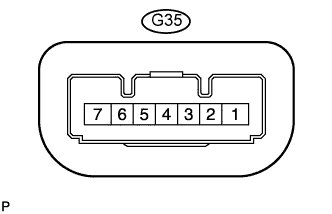

СИСТЕМА БЛОКИРОВКИ РУЛЕВОГО УПРАВЛЕНИЯ > КОНТАКТЫ ЭБУ |
| ПРОВЕРЬТЕ ЭБУ БЛОКИРОВКИ РУЛЕВОГО УПРАВЛЕНИЯ |
|  |
Отсоедините разъем G35 ЭБУ блокировки рулевого управления.
Измерьте напряжение и сопротивление в соответствии со значениями, приведенными в таблице.
| Номера контактов (обозначения) | Цвет проводки | Описание контактов | Условие | Заданные условия |
| G35-1 (GND) - масса | W-B - масса | Масса | Всегда | Менее 1 Ом |
| G35-6 (IG2) - G35-1 (GND) | W - W-B | Вход сигнала IG2 | Зажигание выключено → зажигание включено (IG) | Менее 1 В → 11–14 В |
| G35-7 (B) - G35-1 (GND) | G - W-B | Источник питания | Всегда | 11-14 В |
Подсоедините разъем G35 ЭБУ блокировки рулевого управления.
Измерьте напряжение в соответствии со значениями, приведенными в таблице.
| Номера контактов (обозначения) | Цвет проводки | Описание контактов | Условие | Заданные условия |
| G35-3 (IGE) - G35-1 (GND) | W - W-B | Источник питания привода электродвигателя | Если выполняются все перечисленные ниже условия:
| 11-14 В (электродвигатель блокировки рулевого управления не работает) → менее 1 В (электродвигатель блокировки рулевого управления работает) → 11-14 В (электродвигатель блокировки рулевого управления не работает) |
| G35-4 (SLP1) - G35-1 (GND) | SB - W-B | Выходной сигнал датчика положения разблокировки | Рулевое управление разблокировано → рулевое управление заблокировано | 11-14 В → менее 1,2 В |